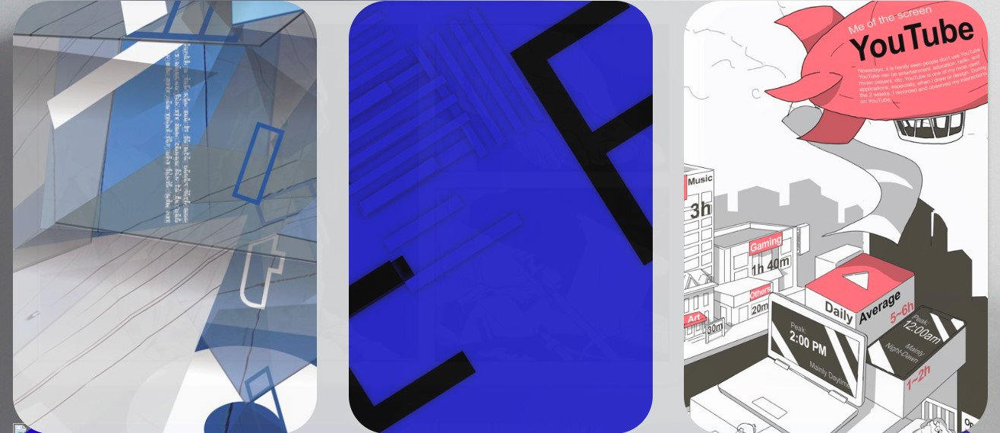
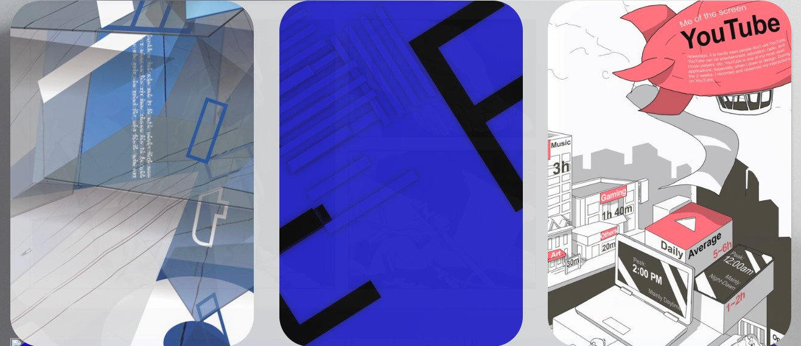

Working process
Apr.27.2022
Using p5 js during project2, I thought I can make a basic drawing tool. Using mouseX and mouseY, we could draw many circles during the class. Using this method, I made a brush. Using the "if statement", I made various functions such as changing the brush sizes with stroke Weight, Eraser matching the background colours. The last submission requirement of project 2 which was the high resolution of the image also helped to make the save button. And then I updated the main banner.


I had some issues with my main banner.
I couldn't fit with the background rectangle and the 3 rectangles above. I tried to think outside of the box using nth-child. So, I could solve the problem but I realized that I could also use "space between" after then. This way was more simple.
 

Apr.28.2022
I tried to make a project 3 webpage. I need a consistency of the style for the project's webpage with a little variation. So, following the project 1 style, I put the part of the final image as a background. I put the final image on the left and put the title on the right as a variation. I was concerned about how to put the long texts. Unlike other projects, this one included a lot of text such as my observations and brainstorming. I didn't want to make infinite scrolling down. So, I searched for w3school again. I found the overflow. I used it for stages 1 and 2.